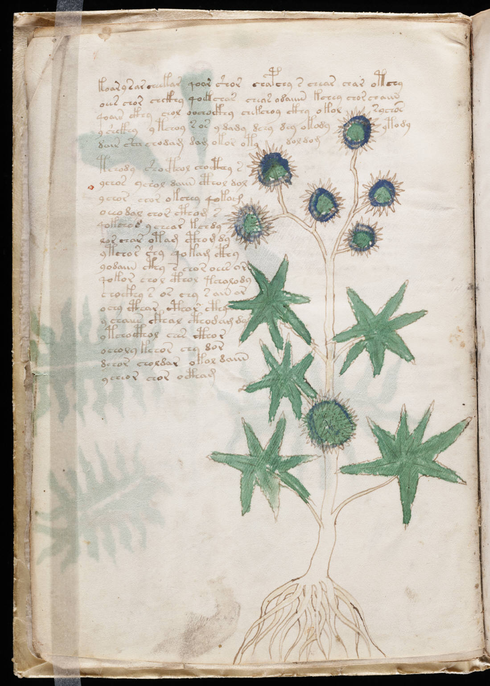

f6v
1koar y sar oheekar qoar shor chapchy s chear char otchy2oees chor chckhy qoekchar cheas odaiin kchey chor chaiin3qoair ckhy chol oochockhy chekchoy ckhy okolrychos4y shckhy ytchoy sos y dady dchy dey okodyytody5dair cshe chodam dam okor oty doldom6tchody shocthol chocthey s7ychos ychol daiin cthol dol8ychor chor okchey qokom9oeeo dal chor cthom s10qokche* ychear kchdy11lor char otam cthom dy12ytchos shy qokam cthy13yodaiin cthy s chor oees or14qokor chol cthol tchalody15chockhy s os chy sain or16ochy cthar cthar cthy17y chaiir ckhal cthodam dy18ytcho cthol ches cthor19ocholy kchos chy dor20dchor choldar okol daiin21ycheor chor octham
